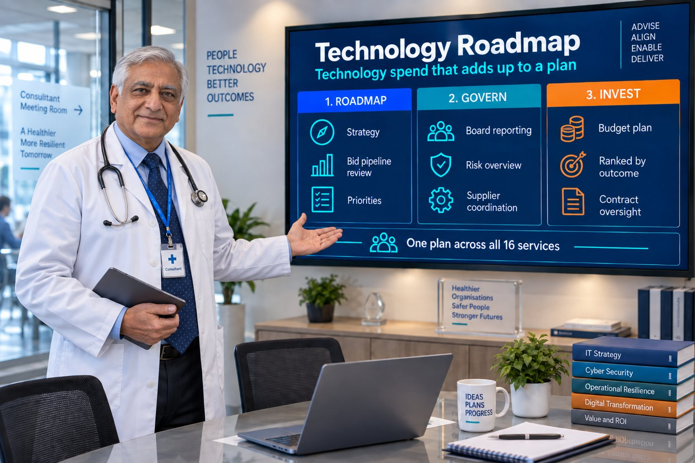

Roadmap & Strategy
A technology roadmap reviewed against the bid pipeline, not built once and forgotten.

Department: Consultant Physician and Chief Medical Advisory
Every technology decision across the other fifteen services needs a strategic frame, or it becomes a series of disconnected purchases that never add up to anything a buyer notices.
Without vCIO oversight, a buyer rarely notices directly — but the business experiences it technology decisions made in isolation, without a coordinated plan, reactive spending instead of planned investment, no board-level visibility into cumulative technology risk, suppliers pulling in different directions instead of one coherent plan and missed opportunity to position technology maturity as a differentiator.
None of this usually costs a specific tender — but it caps how far the other workstreams can take you.
Most manufacturers spend on technology reactively, one urgent problem at a time. The spend adds up over the years, but it never compounds into a story a buyer can actually see.
A vCIO is not a luxury for businesses that cannot afford a full-time CIO. It is board-level judgement, sized right.
A technology roadmap reviewed against the bid pipeline, not built once and forgotten.
Clear, non-technical reporting on technology risk and investment priorities.
MSP, cyber, hardware and automation partners working to one plan.
Budgets planned proactively and ranked against commercial outcomes.
| Tender criterion | What this service contributes | Score effect |
|---|---|---|
| Innovation | Strategic technology positioning supports innovation answers | Moderate |
| Risk | Coordinated technology risk management | Moderate |
| Quality | Coherent technology strategy supports maturity narrative | Moderate |
| Delivery | Long-range planning reduces disruption from reactive investment | Minor |
| Financial Standing | Disciplined investment planning supports commercial credibility | Minor |
A vCIO, or virtual Chief Information Officer, gives you board-level technology leadership on a part-time basis. They set the technology roadmap, report risk to the board in plain English and coordinate your IT, cyber and automation suppliers, for a fraction of the cost of a full-time hire.
Usually when technology decisions start to pile up: several IT suppliers, an ERP or MES decision, customers asking about cyber and OT security, or a tender pipeline that needs technology evidence. If no one is joining those decisions up at board level, that is the gap a vCIO fills.
It gives you evidence for innovation, continuous improvement and risk questions. A roadmap shows a buyer that your investment is planned and tied to the contracts you are bidding for, rather than reactive. It turns separate purchases into a story an evaluator can score.
Reviewed by Rob Atkins, Founder & Principal Consultant, Your Best Solution Limited. Last updated .